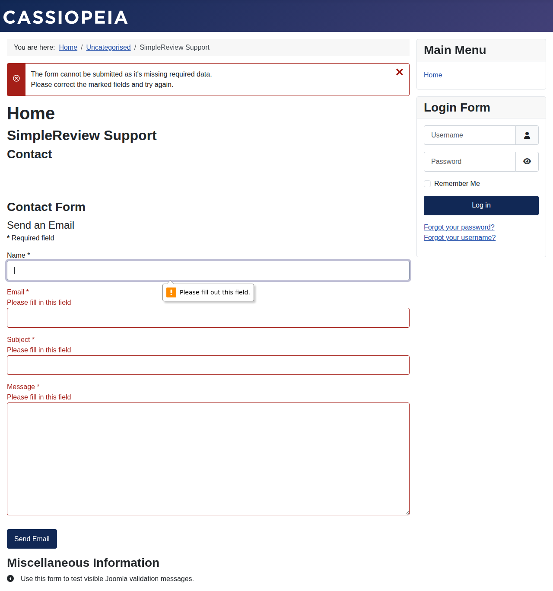
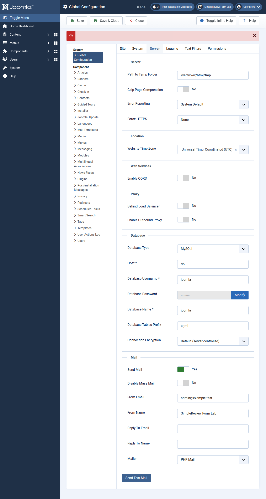

How to Find All Form Errors on a Joomla Site
The fastest way to find Joomla form errors is to reproduce one failed submission, then separate the visible field errors from server-side validation, mail delivery, template overrides, and fatal PHP errors. This guide uses a real Joomla 5.4.5 Docker contact form so the screenshots show the actual Cassiopeia error state, not a mockup.
Short version: visible field warnings are only the first layer. Joomla forms can fail in browser validation, server-side validation rules, component configuration, email sending, template overrides, custom fields, captcha plugins, or PHP errors. Capture each layer before editing code.
Start with one real failed submission
Submit the form exactly as a visitor would. In the screenshot below, Joomla’s core contact form shows a top-level error plus marked required fields. That tells you the page is rendering, the form JavaScript is active enough to mark fields, and the issue is not a blank white-screen PHP crash.

Record the URL, component, template, user role, language, browser, exact input, and the visible error text. If you cannot reproduce the error twice, do not patch yet. Intermittent form errors are often cache, session, captcha, or mail-server issues rather than field validation.
Separate client-side and server-side validation
Joomla’s developer docs are explicit: browser validation is useful, but it is not security. A user can bypass JavaScript and post directly to the server. That means every important form rule must exist on the server side too.
| Layer | Where it lives | What breaks |
|---|---|---|
| Client-side | form.validate, form-validate, validate-email, required fields | Visitor sees no useful hint, bad selector, missing validation asset, template override removed the class |
| Server-side | Form XML validate="...", PHP rule class in libraries/src/Form/Rule or component rule path | “Invalid Field”, save fails, custom component rejects data after POST |
| Delivery | Contacts component settings, mail configuration, captcha, spam plugin | Form appears valid but no email arrives, or submit returns a generic failure |
| Runtime | PHP logs, Joomla debug output, extension stack trace | Fatal error, blank page, admin/login breaks after enabling a plugin |
Inspect the Joomla form definition
If the problem is repeatable, inspect the form XML and template override that render the fields. Required fields should have required="true". Email fields should use the email field type or server-side validate="email". Custom rules need the right rule prefix and a clear message, otherwise users may only see a generic “Invalid Field”.
For custom components, check whether the page includes the Joomla validation asset and whether the form tag still has class="form-validate". Template overrides are a common source of form regressions because they can accidentally remove classes, tokens, labels, hidden fields, or submit button behavior.
Use debug mode only while reproducing
When the error is not visible on the page, use Joomla’s diagnostic settings temporarily. The official FatalError guide says to set Debug System to Yes in the System tab and Error Reporting to Maximum in the Server tab, then reproduce the issue. When finished, switch Debug System back to No and Error Reporting back to System Default.

Checklist: find every Joomla form error source
- Submit the form as a guest and as the affected logged-in role.
- Take a screenshot of the visible field errors and top-level Joomla message.
- Open browser DevTools and check Console plus the POST request response.
- Check the form XML for
required,validate,message,pattern, and captcha fields. - Check template overrides under
templates/[template]/html/for missing classes, hidden fields, CSRF token, or changed submit button markup. - For Contacts, verify the contact has an email address and the form is enabled.
- For custom fields, verify the field group, access level, language, and required state.
- For mail failures, use Global Configuration → Server → Send Test Mail before editing the contact component.
- Temporarily enable debug/error reporting only if the page hides the real PHP error.
- Turn debug off after capture and keep the screenshot/log with the fix ticket.
What SimpleReview can fix
SimpleReview for Joomla is useful when the failing form maps to a file-level fix: a missing validation class, wrong language string, broken template override, incorrect form XML, or custom component validation rule. It captures the screen, identifies the Joomla path, and prepares a site-ready fix you can upload or deploy.
It should escalate to Vibers human review when the issue involves private customer data, payment forms, custom security checks, captcha abuse, or database cleanup after a failed extension migration.
Turn the visible form error into a fix
Click the broken Joomla form with SimpleReview, describe what should happen, and get a site-ready patch instead of a vague support thread.
Install SimpleReview